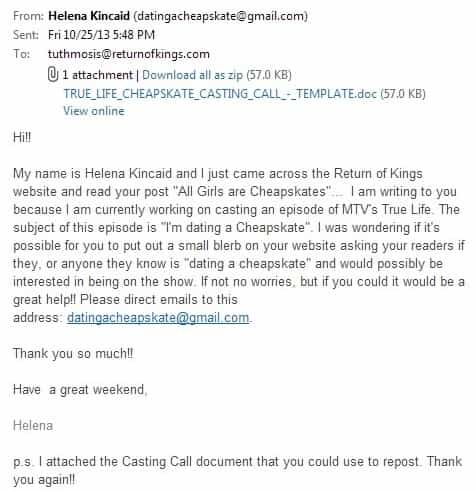
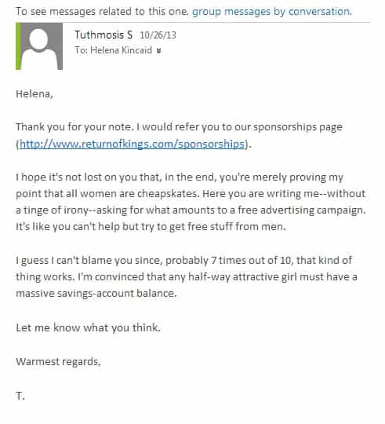
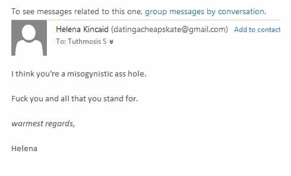
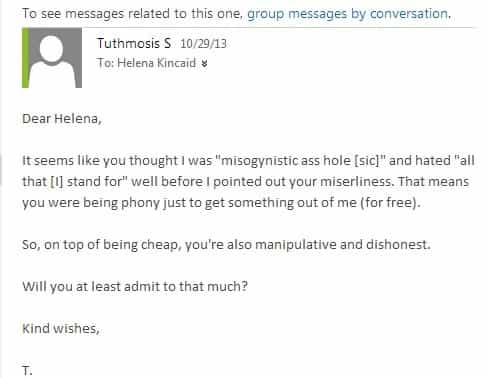

< < < Back
Woman From MTV Demands Free Stuff From Us – Return Of Kings
Some time ago, I wrote a piece titled All Girls Are Cheapskates. In it, I presented a small sampling of miserly and—as I termed it at the time—“tacky” behavior women have exhibited in my presence with respect to money in the recent past. The goal, of course, was to illustrate a truism that’s all too evident to any man who’s dated a lot—women are allergic, and generally unaccustomed, to spending their own money. Many of the commenters enthusiastically cosigned the sentiment, adding their own vignettes and examples that supported the overall thesis. That, I thought, would be the end of it.
Then, a few days ago, I received the following request from a woman, a Helena Kincaid, who claimed to be a casting person for an MTV reality show called “Real Life” which, she added, was planning an episode on dating cheapskates. Some basic triangulation suggested she was telling the truth. She’d apparently, run into my “All Girls” piece in a routine Internet search.

Seeing the writing on the wall, I responded with the following polite message.

Unsurprisingly, she lashed out at me immediately, revealing her true intentions and views.

I was quick to point out her brazen hypocrisy.

In a last-ditch effort to exercise some measure of power over me, she withdraws from the conversation with the implication that I was the one who was pestering her when, in fact, the opposite was true.
Beyond proving my original assertion that all women are cheap, this exchange illustrates the level of manipulation and disingenousness to which some will stoop in order to parasitically extract free stuff from men.
But despite all that went on between us–and in a spirit of forgiveness and generosity–I’ve decided to comply with Helena’s “request” and put out this short “blerb” [sic] plugging her show, setting aside her rather unsavory disposition and vulgar demeanor. If you or anyone you know is interested in being on this show–and working for and with Ms. Kincaid–feel free to reach out to her directly at the contact information above. Best of luck in your auditions!
Read More: “You Didn’t Have to Make Things Awkward”


{kind=link}
{kind=link}
{kind=link}
{kind=link}
{kind=link}
{kind=link}